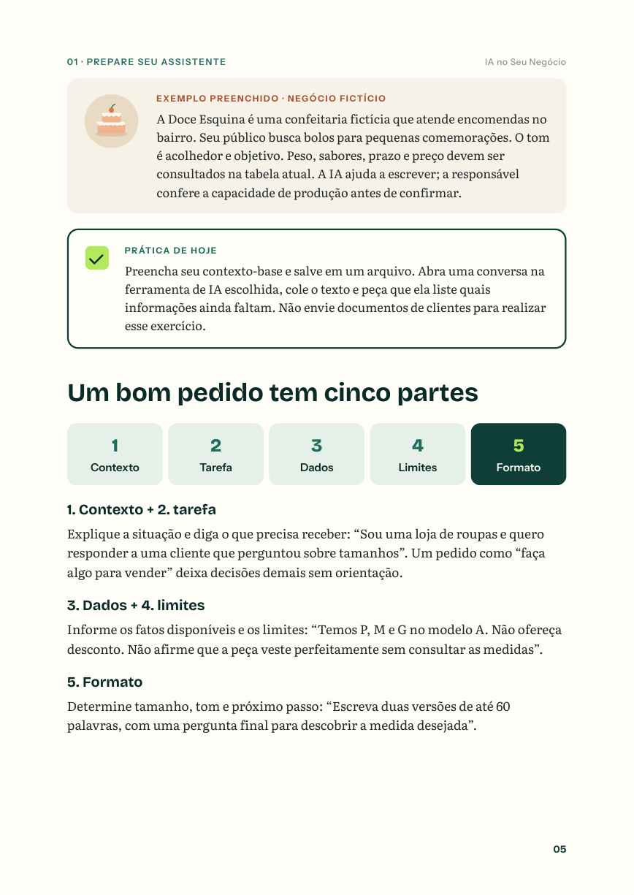
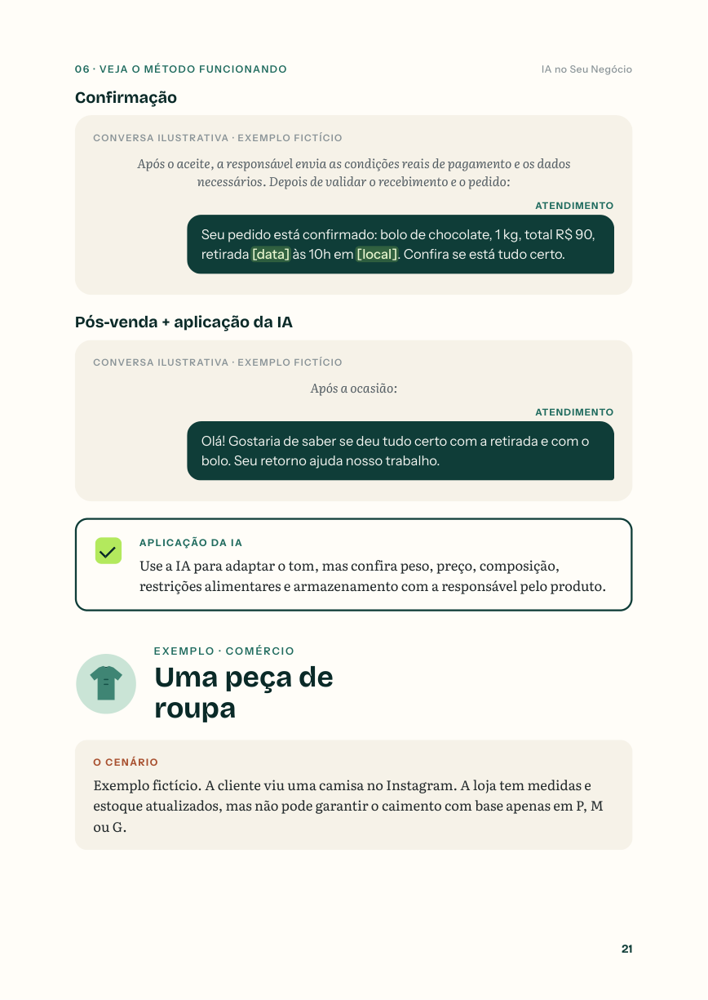

prompts editáveis
Pedidos prontos para adaptar ao ChatGPT e criar conteúdo, respostas e propostas.
Aprenda a usar o ChatGPT para criar conteúdo, atender pelo WhatsApp e organizar suas vendas — de um jeito simples e prático.
Entre responder clientes, pensar no próximo post e preparar orçamentos, é fácil terminar o dia com a sensação de que faltou tempo.
Este guia reúne orientações e modelos para você começar a usar a inteligência artificial nas tarefas que já fazem parte da sua rotina.
Veja como funciona ↗Conteúdo direto ao ponto, com exemplos para adaptar à sua realidade.
Pedidos prontos para adaptar ao ChatGPT e criar conteúdo, respostas e propostas.
Modelos para atendimento, orçamento, acompanhamento e pós-venda no WhatsApp.
Um calendário de pautas para facilitar o planejamento da sua divulgação.
Exemplos para comércio, alimentação e serviços ✳ Plano de aplicação em 7 dias ✳ Ficha de trabalho
Não é preciso ser especialista em tecnologia. O guia foi pensado para ajudar você a começar com as ferramentas e a rotina que já conhece.
Quero meu guia ↗Um post, uma dúvida frequente ou uma proposta para um cliente.
Use os prompts e mensagens como ponto de partida para o seu negócio.
Confira informações, ajuste ao seu tom e publique ou envie a mensagem.


De uma publicação à resposta para um cliente, você vai encontrar maneiras de organizar o trabalho e comunicar melhor o que seu negócio oferece.
Se você tem uma loja, uma cafeteria, uma confeitaria, um salão ou presta serviços e quer começar a usar IA no dia a dia, este guia foi feito para você.
Um material para consultar sempre que precisar de ideias, clareza ou um ponto de partida para uma conversa.
Conteúdo prático + modelos para adaptar à sua realidade.
Você será direcionado ao checkout da Kiwify.
Não. O material foi preparado para quem está começando e apresenta modelos que você pode adaptar.
Após a confirmação do pagamento, o acesso é feito pela área de membros da Kiwify, onde o PDF fica disponível para baixar.
Não. É um guia digital em PDF com orientações, exemplos, prompts e mensagens para consulta.
O guia ensina a preparar e revisar as mensagens para uso manual. Para respostas automáticas com IA é necessária uma integração específica.
O conteúdo foi pensado para pequenos negócios e prestadores de serviços. Os exemplos e modelos devem ser adaptados aos seus produtos e condições.